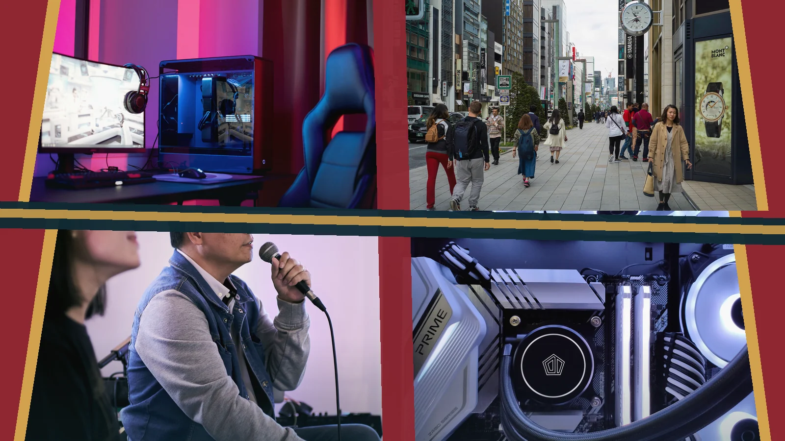
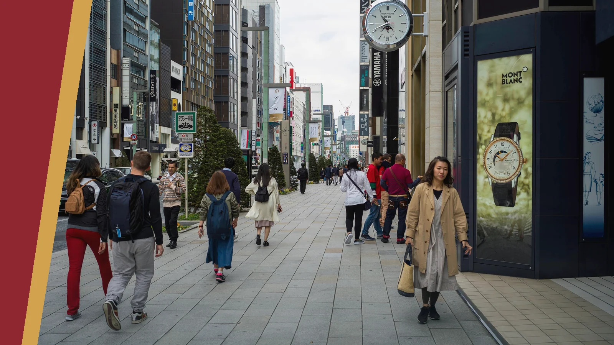
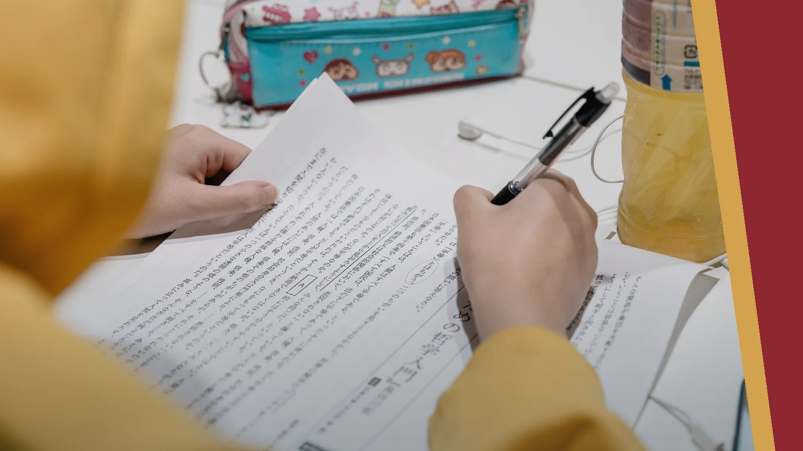
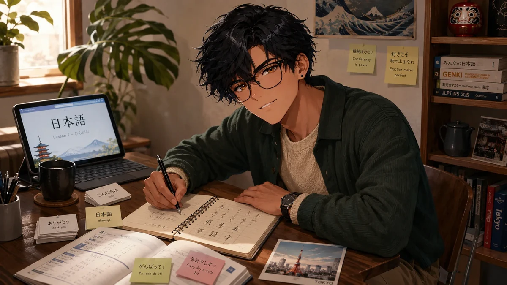
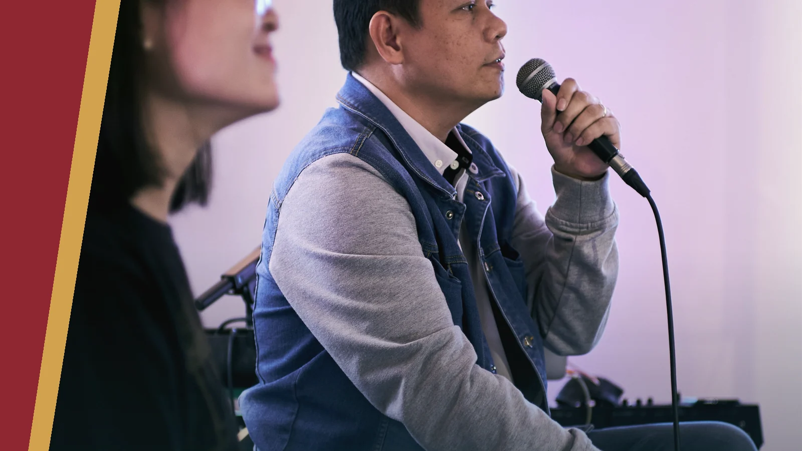
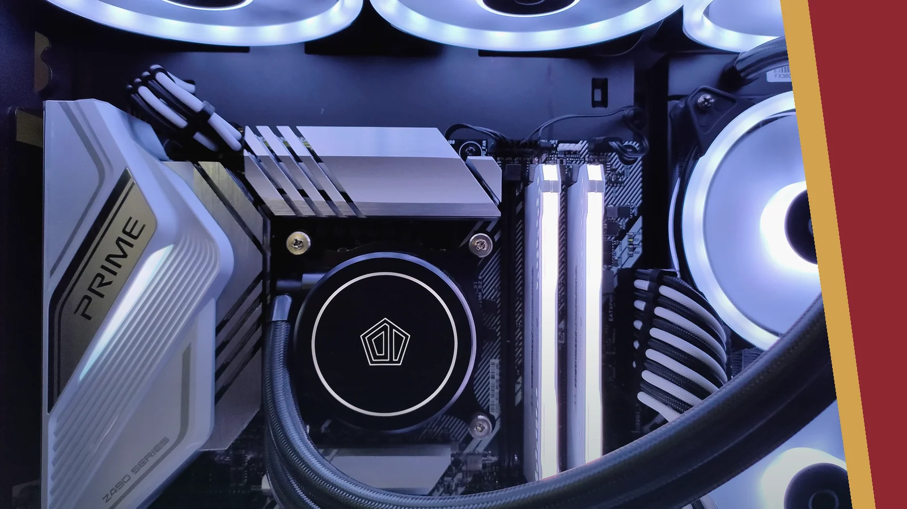
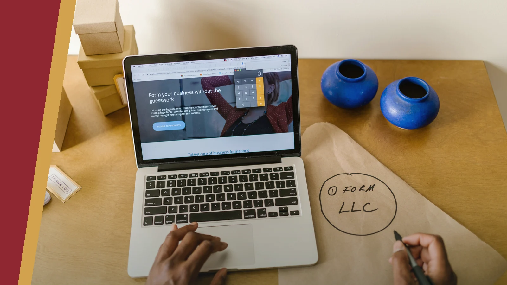

Life · the extended vibe check
The parts that make the rest worth doing.
Work matters to me, but it is not the whole identity. This page is for the interests, communities, places, and long-term ambitions that shape how I think and what I enjoy. They get to exist here without becoming résumé bullets.

Many lanes. One person.
01 / Gaming
Systems, stories, competition, and the occasional ranked-lobby humbling.
Gaming is where my analytical and playful sides overlap. I enjoy learning matchups, builds, economies, team roles, and the strange social ecosystems that form around a game.
02 / Travel & culture
New places are part adventure, part field study.
I notice how cities move, what everyday life costs, how people gather, what food says about a place, and whether a location supports the kind of life people claim it does. Travel also keeps family history, cultural identity, and long-term relocation questions grounded in reality.



03 / Japanese & anime
A long-term language project with an enormous cultural side quest.
Japanese began as an academic minor and became a durable personal project shaped by formal study, travel, exchange programs, media, history, and the satisfaction of slowly understanding more than I could before.
Anime is part entertainment and part cultural conversation: ambitious worlds, dramatic character arcs, folklore, technology, identity, and a backlog that remains undefeated.
04 / Karaoke & community
Full commitment once the microphone is live.
Karaoke, dancing, conventions, cultural events, and group activities matter because life should contain spaces where people can be expressive, unserious, and genuinely present with one another.


05 / PC building
Half practical system design, half enthusiast rabbit hole.
Building and repurposing computers combines research, compatibility, budgeting, aesthetics, troubleshooting, and the deeply satisfying moment when a complicated collection of parts finally behaves like one machine.
06 / Future & entrepreneurship
I want a life with meaningful work—and enough ownership to keep building.
Entrepreneurship interests me less as a fantasy of escaping work and more as a way to create useful systems, make decisions with accountability, and eventually build more control over time, location, and the projects worth pursuing.
The long-term picture includes nursing, advanced business education, global mobility, family, language study, and ventures that are real enough to survive contact with customers and operations.

My patient-care experience, education, credentials, and résumé are on the Work page. Life stays here: the interests and ambitions that give those goals meaning.
Why it all matters
A full life is not a distraction from serious goals.
Curiosity, play, culture, relationships, learning, and creative work are part of the reason the professional goals matter in the first place.